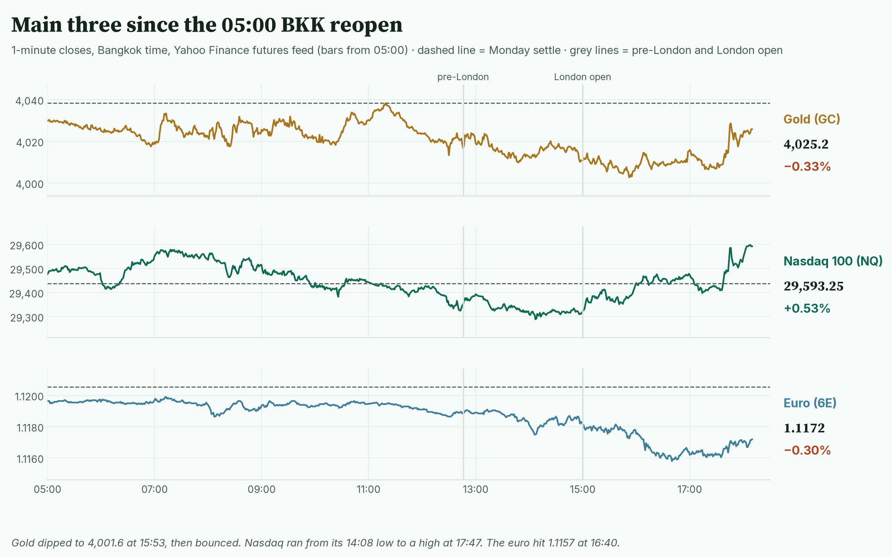
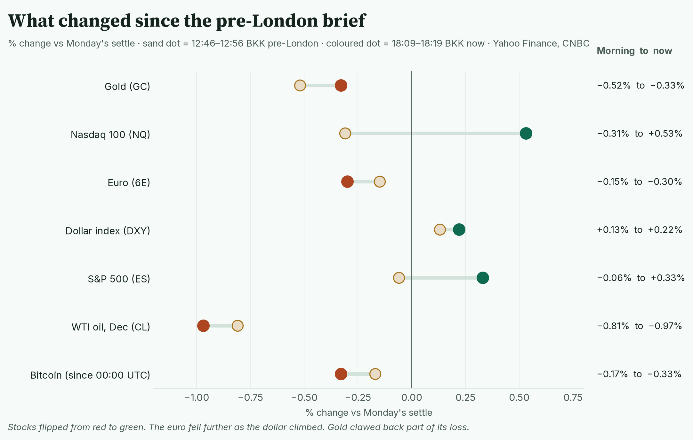
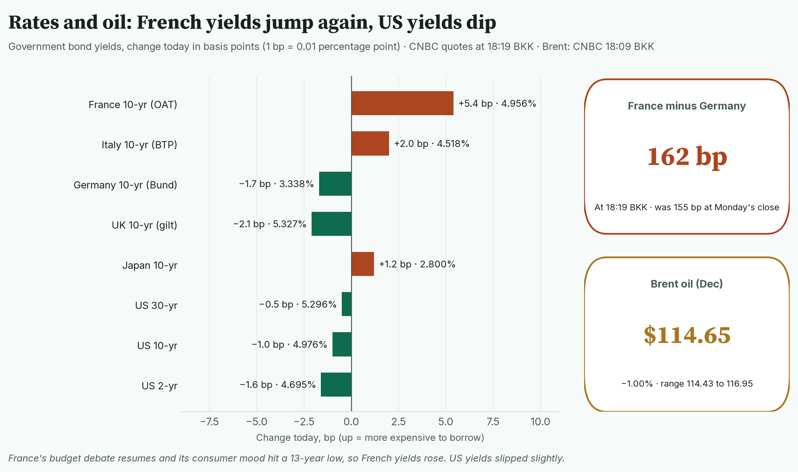
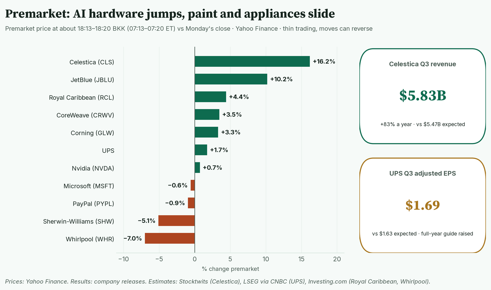
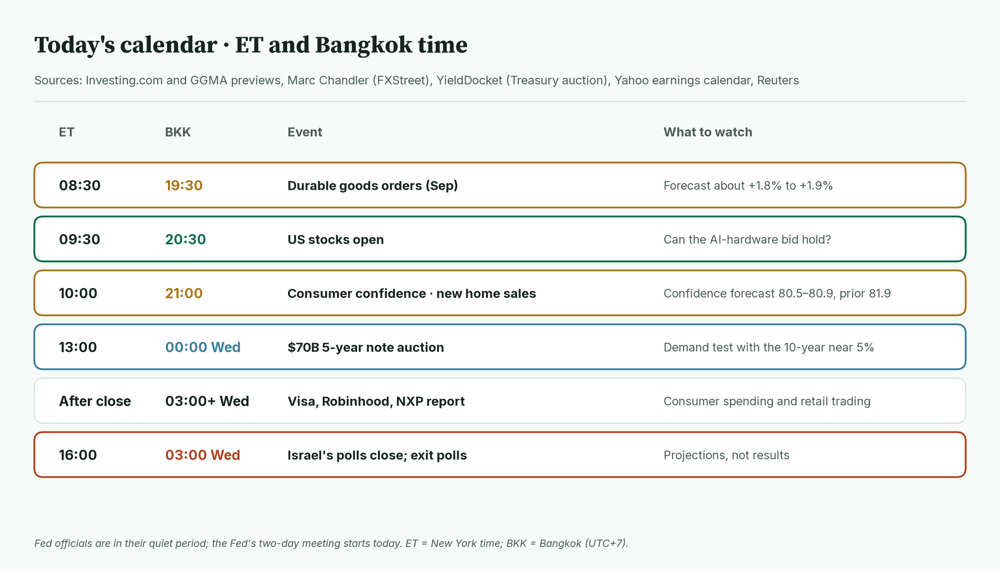
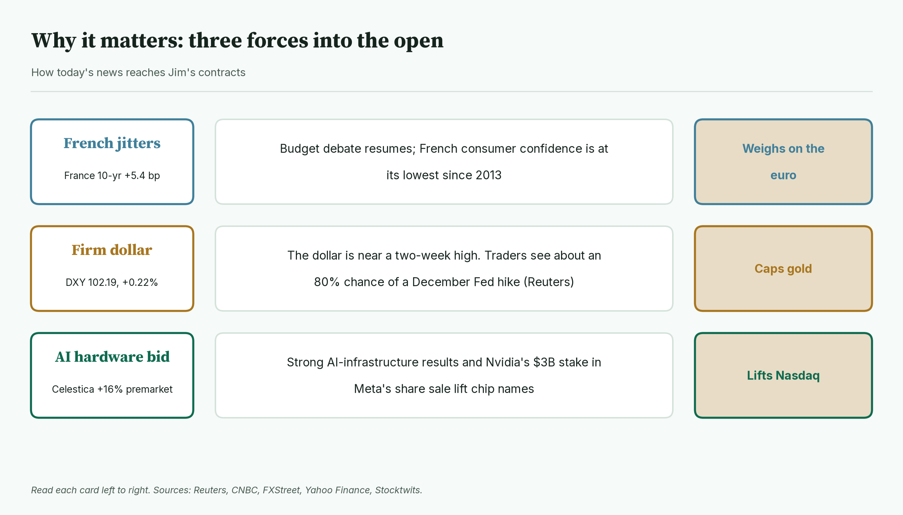
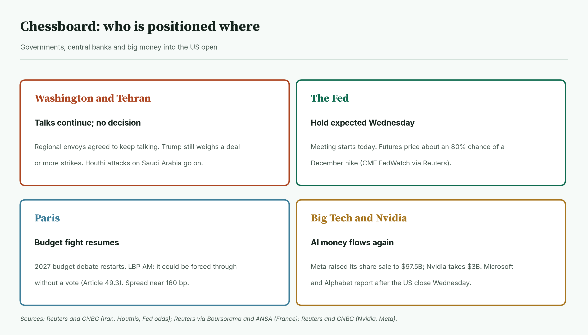
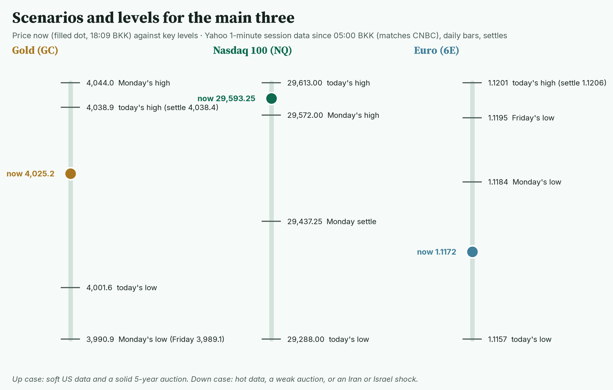
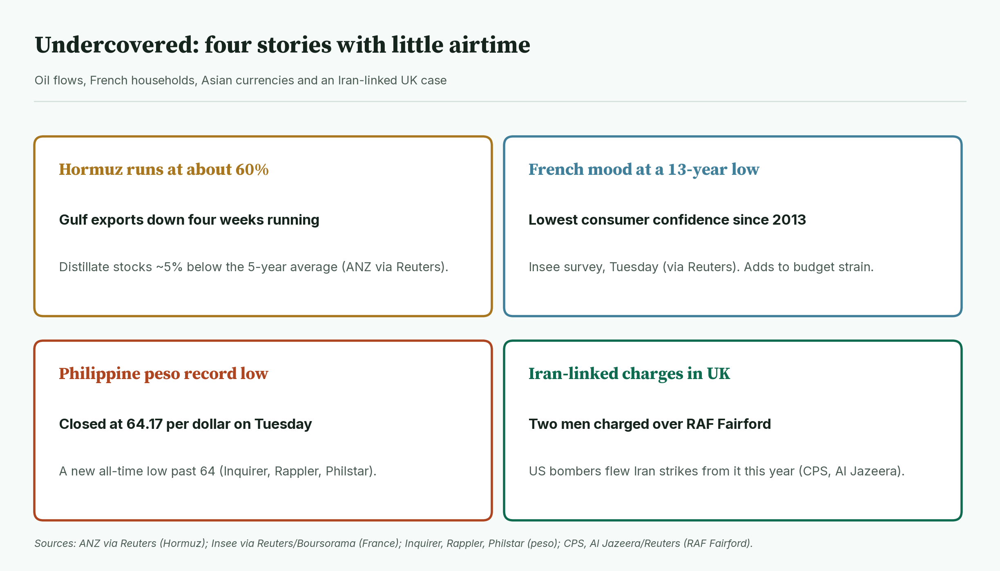
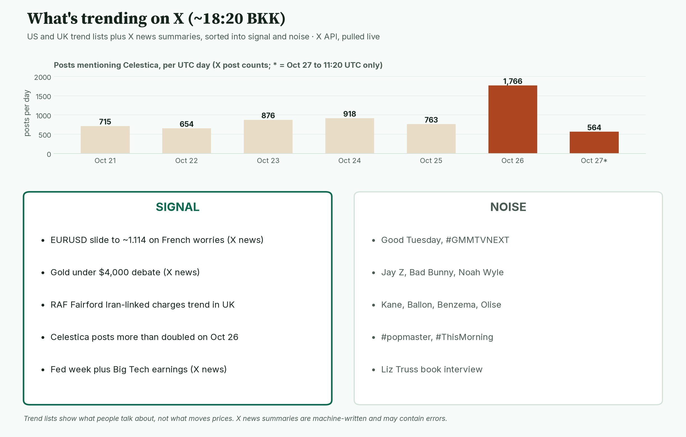

April · Market Intel, pre-NY · Tue Oct 27, 2026 · ~18:40 BKK / ~07:40 New York
Headline: Nasdaq futures flipped from red to green and now sit near the day's high at 29,593.25, +0.53%. The euro slid to its lowest in about two weeks at 1.1172 as French bond worries returned. Gold dipped to 4,001.6, then bounced to 4,025.2.
So what: AI hardware is carrying stocks, and France is weighing on the euro. US data at 19:30 and 21:00 BKK, then a $70B five-year bond sale at 00:00 BKK, set the tone. Israel's exit polls land at about 03:00 BKK. The Fed decides at 01:00 BKK Thursday.
1) Main instruments The three main contracts on 1-minute bars since the 05:00 BKK reopen. Nasdaq rallied late in the European morning; the euro bottomed at 16:40 BKK. |
(Futures trade nearly around the clock, so they show the mood before stocks open. Quotes: Yahoo Finance futures feed at 18:09 BKK (07:09 New York), about 10 minutes delayed, and they match CNBC. Ranges: 1-minute bars from the 05:00 BKK reopen to 18:10 BKK; today's bars start at 05:00. CNBC's session highs and lows match.)
- Gold futures (GC, Dec): 4,025.2, −0.33%, at 18:09 BKK. Driver: the dollar is near a two-week high, which makes gold dearer for non-US buyers (Reuters).
- Gold's range is 4,001.6 (15:53 BKK) to 4,038.9 (11:20 BKK). The low is new since pre-London.
- Re-checked: futures held above Monday's low of 3,990.9 and Friday's 3,989.1 (Yahoo daily bars). Spot gold (the cash price) did slip under $4,000. Its low was 3,990.09 (CNBC); Reuters had it at 3,995.89 at 16:29 BKK. It is back at 4,011.10, −0.13% (CNBC, 18:19 BKK).
- Nasdaq 100 futures (NQ, Dec): 29,593.25, +0.53%, at 18:09 BKK. Driver: AI hardware names are up premarket, led by Celestica after strong results (Stocktwits, Yahoo prices). Linking the rally to that is my read, not confirmed.
- Nasdaq's range is 29,288.00 (14:08 BKK) to 29,613.00 (17:47 BKK). Both are new since pre-London; the high tops Monday's 29,572.00.
- Euro futures (6E, Dec): 1.1172, −0.30%, at 18:09 BKK. Driver: French bond yields jumped again, and the euro is the weakest major currency today (FXStreet, Reuters).
- The euro's range is 1.1157 (16:40 BKK) to 1.1201 (05:00 BKK). It broke Monday's low of 1.1184 and Friday's 1.1195. Spot euro is 1.1148, −0.21%, low 1.1136 (CNBC, 18:19 BKK).
- Takeaway: stocks found buyers; the euro found sellers; gold held its floor.
Context. The dollar index (DXY, the dollar against six major currencies) is 102.19, +0.22% (CNBC, 18:19 BKK), up from 102.09 this morning. The US 10-year yield (what the US government pays to borrow for 10 years) is 4.976%, down 1.0 basis point (CNBC, 18:19 BKK; a basis point is 0.01 percentage point). Its range today is 4.962% to 4.999%. The VIX (the "fear gauge" built from S&P 500 option prices) is 17.84, −2.99% versus Monday's close (CNBC, 18:19 BKK). US oil (CL, Dec) is 100.77, −0.97% (18:09 BKK), with a range of 100.60 (12:30 BKK) to 102.82 (15:28 BKK). Brent (Dec) is 114.65, −1.00% (CNBC, 18:09 BKK), with a range of 114.43 to 116.95. S&P 500 futures (ES) are 7,739.75, +0.33% (18:09 BKK), with a range of 7,699.75 (15:00 BKK) to 7,743.25 (17:47 BKK). Bitcoin is $79,748, −0.33% since 00:00 UTC (Yahoo, 18:19 BKK).
2) Top signals: what changed since pre-London Each line runs from the 12:46–12:56 BKK reading to 18:09–18:19 BKK. Stocks turned green; the euro and gold sank further before gold's late bounce. |
- Stocks flipped. Nasdaq futures went from −0.31% to +0.53%. (High: Yahoo, CNBC)
- France is back in focus. Its 10-year yield rose 5.4 bp to 4.956% (CNBC, 18:19 BKK). (High: Reuters via Boursorama)
- Oil spiked and faded. Brent hit 116.95 at 15:28 BKK on Houthi attack worries, then fell back to 114.65. (High: CNBC prices; Reuters)
- December hike odds rose. Reuters cites about 80% on CME FedWatch (a tool that reads rate odds from futures prices). This morning's AFP figure was about 70%; the sources differ.
- Takeaway: AI money is back in stocks, while rates and France weigh on everything else.
3) Rates, FX and oil Change in 10-year and other government yields today, CNBC at 18:19 BKK. France, Italy and Japan rose while the US, Germany and the UK fell. |
- US 2-year 4.695%, −1.6 bp. 10-year 4.976%, −1.0 bp. 30-year 5.296%, −0.5 bp (CNBC, 18:19 BKK).
- France's gap over Germany is 162 bp at 18:19 BKK, up from 155 bp at Monday's close (CNBC). Mentor: this gap is the extra pay investors demand to hold French debt over safer German debt.
- Why: budget debate restarts in Paris. LBP AM analysts say the government could force the budget through without a vote, using Article 49.3 of the constitution (Reuters via Boursorama). French consumer confidence fell to its lowest since June 2013 (Insee via Reuters).
- FX: the yen is at 157.64 per dollar (CNBC, 18:19 BKK). FXStreet's Marc Chandler flags 1.1110 as key support for the spot euro. Spot's low for the year is about 1.1114, set on Oct 13 (Yahoo daily bars).
- Oil: Gulf crude exports fell for a fourth week. Hormuz flows are about 60% of normal (ANZ via Reuters).
- Takeaway: the euro has its own problem today, and it is French.
4) Premarket earnings Premarket moves at about 18:13–18:20 BKK versus Monday's close (Yahoo). AI hardware and travel up; paint and appliances down. |
- Celestica: +16.2%. Revenue $5.83B, up 83%, versus $5.47B expected. Adjusted EPS (earnings per share, excluding one-offs) $3.30 versus $2.96. (High: company release; estimates per Stocktwits; reported Monday after the close)
- UPS: +1.7%. Adjusted EPS $1.69 versus $1.63. Revenue $22.9B. It raised its full-year EPS guide to about $7.28. (High: Reuters, Investing.com)
- Royal Caribbean: +4.4%. EPS $6.57 versus $6.38; revenue was just short of estimates. (High: Investing.com)
- Sherwin-Williams: −5.1%. Sales $6.86B, up 7.9%, above the roughly $6.78B expected. Adjusted EPS $3.63 missed the roughly $3.69 expected; reported EPS was $3.38. (High: company release; estimates per StreetInsider, Investing.com)
- Whirlpool: −7.0% after a quarterly loss and a revenue miss, reported Monday after the close. Ongoing loss $0.21 a share; revenue $3.68B versus about $3.97B expected. It cut its full-year outlook. (High: company release, Investing.com)
- Nvidia +0.7%. It will put $3B into Meta's share sale, now $97.5B (Reuters, CNBC).
- Coca-Cola: −0.2%. Reported this morning: EPS $0.93 (comparable $0.91), revenue up 7% to $13.4B, and it raised its full-year guidance (company release).
- PayPal: −0.9%. It released results at 07:00 ET (18:00 BKK), just before this brief's data cut; I have not checked the figures (PayPal).
- Still due before the open: Boeing. Expected loss of 21 cents a share on $23.84B revenue (LSEG via CNBC). Its call is at 10:30 ET (21:30 BKK).
- Takeaway: AI hardware is the bid; consumer goods names are the weak spot.
5) US calendar today (ET and BKK) Tuesday's schedule in New York and Bangkok time. Two data releases and a bond sale, then Israel's exit polls. |
- 08:30 ET / 19:30 BKK: durable goods orders (orders for long-lasting goods such as machines and planes). Forecast about +1.8% to +1.9% (Investing.com, GGMA).
- 09:30 ET / 20:30 BKK: US stocks open.
- 10:00 ET / 21:00 BKK: consumer confidence and new home sales. Confidence forecast about 80.5 to 80.9, prior 81.9.
- 13:00 ET / 00:00 Wed BKK: $70B five-year note auction (YieldDocket). Weak demand would push yields up.
- After the close (from about 03:00 Wed BKK): Visa, Robinhood and NXP report (Yahoo earnings calendar).
- 16:00 ET / 03:00 Wed BKK: Israel's polls close. Exit polls are projections, not results. Final polls showed Netanyahu's bloc short of a majority (The Guardian).
- Takeaway: 21:00 BKK and 00:00 BKK are today's deciders.
6) Why it matters Three forces and how each reaches the main contracts. |
- France hits the euro. When French debt looks risky, money leaves euro assets.
- A firm dollar caps gold. Gold pays no interest, so hike talk makes it less attractive.
- AI results lift Nasdaq. Strong orders at suppliers suggest Big Tech's AI spending continues.
- Takeaway: hot US data would hurt gold and the euro most; soft data would help both.
7) Chessboard Who is acting or positioned into the US open. Iran and Israel's vote are the off-calendar risks. |
- Washington and Tehran: regional envoys agreed to keep talking. Trump still weighs a deal or more strikes. Houthi attacks on Saudi Arabia continue. (High: Reuters, CNBC)
- The Fed: a hold is expected Wednesday. The fight is over December. (High: Reuters)
- Paris: the 2027 budget debate resumes; the government may force it through without a vote. (High: Reuters via Boursorama, ANSA)
- Big Tech: Meta raised its share sale to $97.5B. Microsoft and Alphabet report Wednesday after the US close. (High: Reuters, Investing.com)
- Takeaway: France is today's slow burn; Iran remains the sudden one.
8) Scenarios and levels Price now against today's key levels. Nasdaq is near its high; the euro is near its low. |
- Up case: soft US data and a solid auction. Gold retakes 4,038.9 and eyes Monday's high of 4,044.0. Nasdaq clears 29,613.00. The euro gets back above 1.1184.
- Down case: hot data, a weak auction, or an Iran or Israel shock. Gold breaks 4,001.6, then 3,990.9 and 3,989.1. Nasdaq loses Monday's settle of 29,437.25, then 29,288.00. The euro breaks 1.1157.
- Takeaway: gold's 3,990 floor and the euro's 1.1157 low are the lines that matter. This is a framework, not a forecast.
9) Undercovered Four stories with little airtime: oil flows, French households, the peso and an Iran-linked UK case. |
- Hormuz flows are about 60% of normal. Distillate stocks (diesel and heating oil) are about 5% below their five-year average. (High: ANZ via Reuters)
- French households are at their gloomiest since 2013. (High: Insee via Reuters)
- The Philippine peso hit a record low past 64 per dollar. It closed at 64.17 on Tuesday. (High: Inquirer, Rappler, Philstar)
- Two men were charged in the UK over an incident at RAF Fairford, a base US bombers used for strikes on Iran this year. One is charged with assisting a foreign intelligence service, which police believe is Iran's. (High: Crown Prosecution Service, Al Jazeera/Reuters)
10) What's trending on X (~18:20 BKK) Daily posts mentioning Celestica, plus today's trends sorted into signal and noise. Posts more than doubled to 1,766 on Oct 26. |
- US: Good Tuesday, Noah Wyle, Jay Z, Comey, Bad Bunny, Ripple.
- UK: Kane, RAF Fairford, #popmaster, Ballon, Liz Truss, Bundesliga.
- Signal: X finance stories focus on the euro sliding toward 1.114 on French worries, and gold under $4,000. (Medium: X news summaries)
- Data point: Celestica posts rose from 763 on Oct 25 to 1,766 on Oct 26 (X post counts).
- Noise: one X story says spot gold traded as low as $3,975 today. CNBC's low is 3,990.09, so treat that figure as wrong.
- Noise: sports, celebrities, a Liz Truss book interview.
Bottom line
Stocks are leaning up, the euro is leaning down, and gold is stuck in between. For Jim: gold at 4,025.2 has held 4,001.6; 3,990.9 and 3,989.1 are the floors, and 4,038.9 is the ceiling. Nasdaq at 29,593.25 needs 29,613.00 to extend; Monday's settle of 29,437.25 is first support. The euro at 1.1172 is near its 1.1157 low; spot's yearly low near 1.1110 is the bigger line. Interpretive note: mixed signals are common on a Fed-eve Tuesday; markets often chop until the decision. That is a read, not a forecast.
Confidence: Futures levels: high for direction, medium-high for the exact tick (Yahoo feed, about 10 minutes delayed; ranges match CNBC). Yields, spot gold, spot euro, Brent, DXY, VIX: CNBC, time-stamped. Nasdaq driver: my read. Fed odds: Reuters (80%) and AFP (70%) differ. Celestica: results from the company; estimates from Stocktwits (Benzinga similar). Sherwin-Williams miss: on adjusted EPS, per StreetInsider and Investing.com. PayPal figures: not checked. Peso and RAF Fairford: confirmed by news reports.
Charts: /workspace/april-charts/2026-10-27/pre-ny-{scoreboard,main3,delta,rates,earnings,calendar,why,chess,scenarios,under,xsplit}.png |